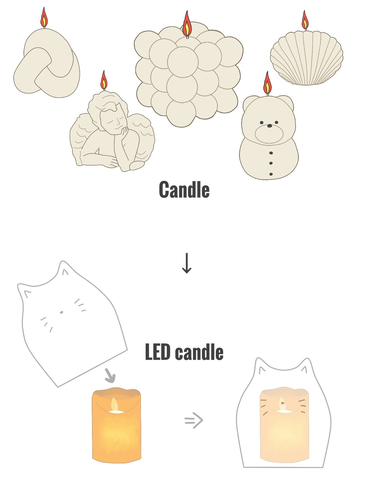

課題
夏休みにいろいろと世の中を観察し、社会に存在する大小様々な課題を発見し、ビジネスを通して解決したい課題を考えてスケッチする。
キャンドルに関する問題
・ろうそくによる火事が多い。⇨ 夏はお盆などでろうそくを使う機会が増えるから。
⇩
他にもキャンドル関連でどのような問題があるか考えてみた。
・アロマキャンドルによる火事も増えている。
・住居環境(賃貸)によってはキャンドルを使えない。
→ 実際に私の自宅(賃貸)ではアロマキャンドルが使えない。
・匂いや材質、燃えた時の有害物質⇨アレルギーの心配がある。
・子どもやお年寄りの火傷が心配。
などの問題や心配な面が多々ある。
しかし、キャンドルにはさまざまな形や色のものがあるため、代わりとなるLEDキャンドルだと
色の種類や形の種類が少なく物足りない。そこで考えたのが、
LEDキャンドルカバー
安全面でも安心面でも優れているLEDキャンドルに被せるカバーを、
3Dプリンターでさまざまな色や形で作ればいいのではないか、と考えました。
